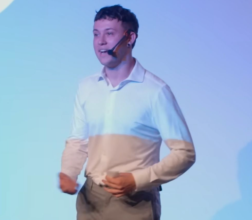
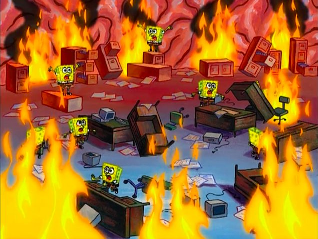

Sobre mí
Enhorabuena, me has visto con una camisa puesta.
Ahora pide un deseo, esto pasa una vez cada nosecuantos años.
Lo de la camisa fue por un discurso que di ante 300 personas en el que estaba acojonado.
Discurso el cuál 5 días antes no tenía ni idea de que iba a hacer eso,
Ni siquiera de qué iba a hablar, pero de eso te hablo luego.
Primero te contaré qué hago aquí.
Soy copywriter y me dedico a escribir para que la gente lea y compre.
A esto me dedico.
Igual te interesa (o no)
Pero te aclaro que, aunque lo pueda llegar a parecer, no soy Martin Luther King Jr.
Y sinceramente, tampoco espero serlo.
¿Por qué te cuento esto?
Porque llevaba desde los 16 perdido sin saber qué quería hacer con mi vida, hasta ahora.
8 años han tenido que pasar para saber qué cojones quiero hacer con mi vida.
¿Han merecido la pena?
Completamente.
Ahora voy con un cohete en el culo.
Y entre esos 8 años, está lo del discurso, entenderás por qué lo menciono.
Como te comenté, no tenía ni idea de que lo iba a hacer ni de qué iba a hablar.
Solo sabía que me habían seleccionado junto a 7 personas más.
De un casting entre 8000 personas para vivir un proyecto de comunicación durante una semana.
Flipas.
Mi madre no quería que fuera, se pensaba que me iban a secuestrar, y con razón.
Ni siquiera yo sabía dónde iba a estar ni qué iba a hacer.
El caso es que la última prueba de todas las que habían era el discurso de 10 minutos.
Y durante esa semana, tenías que preparártelo.
Junto a otras nosecuantas pruebas sorpresa de liderazgo, debate, persuasión, etc.
Y en paralelo, dormir la maravillosa cantidad de 6 horas al día (con suerte) y sobrevivir en el intento.
Llegamos al último día, no sé ni cómo, pero llegamos.
Me había dejado la vida en sobrevivir y preparar aquel discurso en tiempo récord.
Cuando llegamos al auditorio, intentaba disimular que estaba más acojonado que un babuino subido a un árbol en el Amazonas con 4 panteras debajo.
Me llaman para subir al escenario, y ahora el babuino era yo y tenía a 300 panteras esperando.
Subo la escalera como si fuera el Apolo 11.
Miro al público, y pienso:
"Ostias" jajajajaja.
Meto un suspiro, me quedo analizando la situación, pasan 5 segundos y digo.
"Fuf, qué alegría me da estar aquí ante todos vosotros, qué emoción"
No sé ni de dónde vino eso.
Y mientras tanto, sin que nadie lo supiera, en mi cabeza pasaba algo así:

DÓNDE ESTÁ MI DISCURSO.
Vale, aquí.
Y empiezo con mis 10 minutos.
Normalmente, se suele decir que si haces reír o llorar al público, ha sido la ostia.
Y que si haces ambas en el mismo discurso, tienes un bombazo.
Adivina qué pasó.
Y acabo ya.
Cuando bajé del escenario, me di cuenta de que se me daba jodidamente bien conectar con las personas.
Sabía perfectamente dónde tocar para que alguien que no me conoce de nada sienta exactamente lo que quería.
Imagina que esas 300 personas son tus clientes.
Lo mismo hasta te interesa que tu web conecte de esa manera.
Porque si yo te cuento una historia, pero una buena de verdad.
De esas que te llevan de paseo por tu web hasta donde quieras.
Ahí es cuando pasa lo que realmente esperabas.
Y no seré yo el que te diga lo que pasa cuando alguien confía en lo que ofreces.
En resumen:
Soy copywriter, y me mola mucho lo que hago.
Aunque hay otras cosas que no me molan tanto.
Como cuando alguien ofrece algo de valor y pasa desapercibido.
O cuando son una fotocopia de su competencia.
Ahora, si quieres no ser uno más y que la gente lo perciba, deberías rellenar el formulario de abajo.
Lo mismo hasta piensas que vender es fácil.
Si esto no es para ti, que pases un buen día, que al menos te has entretenido.